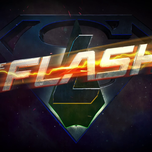

Invasion! is the name of the third annual Arrowverse crossover event between Supergirl, The Flash, Arrow and DC's Legends of Tomorrow. The crossover aired over four nights from November 28 to December 1, 2016.
| Serie | Episode No. | Episode Title | Original Air Date | |
|---|---|---|---|---|
| Part 1 | The Flash | Season 3Epsiode 8 | "Invasion!" | November 29, 2016 |
| Part 2 | Arrow | Season 5Epsiode 8 | "Invasion!" | November 30, 2016 |
| Part 3 | DC´s Legends of Tomorrow | Season 2Epsiode 7 | "Invasion!" | December 1, 2016 |
When aliens called the Dominators attack Central City, Barry speeds over to Star City to ask the Green Arrow for help in stopping them. Realizing the battle against the Dominators is bigger than they thought, they track down the Legends of Tomorrow, and Barry and Cisco create a breach to bring back a secret weapon – Supergirl. Once all of the super friends are assembled, they come up with a plan to attack and save the world from being dominated by the Dominators.

Barry Allen investigates a meteor crash outside Central City which is a spaceship from which aliens emerge. Lyla Michaels tells the team that the Dominators had landed during the 1950s, but mysteriously departed. Barry assembles the original members of Team Arrow, Thea Queen, the Legends, and Kara Danvers, Supergirl of Earth-38. The team begins training at a S.T.A.R. Labs facility, sparring with Supergirl to prepare for the aliens. Kara struggles to earn Oliver Queen's trust. Cisco Ramon finds and reveals a message Barry's future self-sent to Rip Hunter, which exposes Barry's manipulation of the timeline and its effect on other team members. As a result, only Oliver, Kara, Felicity Smoak, Martin Stein, Jefferson "Jax" Jackson, and Caitlin Snow still trust Barry. After the Dominators abduct the President of the United States, the team goes to rescue him; however, Barry remains behind since most of them distrust him with Oliver staying behind in support of Barry. Kara leads the group, but the Dominators kill the President and activate a mind control device to take over the group. The controlled heroes return and attack S.T.A.R. Labs, where Barry and Oliver confront them. While Oliver holds them off, Barry lures Kara to the device and manipulates her into destroying it, freeing everyone from the Dominators' control. When the team regroups, Ray Palmer tells Barry that everyone forgives and trusts him. Sara Lance, Ray, John Diggle, Thea, and Oliver are then abducted by the Dominators. They are held in pods on a Dominators' ship, each one unconscious except for a shared hallucination of simulated reality. In the hallucination, Oliver is living at Queen Manor, having never gotten on the Queen's Gambit, and is about to be married to Laurel Lance. His parents are alive, and Diggle is operating as the vigilante the Hood, instead of Oliver. The captives begin seeing flashes of their real lives, and realize what the Dominators have done to them. Their escape attempt is blocked by personifications of their enemies: Malcolm Merlyn, Deathstroke and two of his Mirakuru soldiers (who killed Ray's fiancée Anna Loring), and Damien Darhk and two of his H.I.V.E. soldiers. The adversaries are defeated, and the five awaken in the Dominators' ship and escape in a shuttle. Felicity, Curtis Holt, and Cisco try to hack into the Dominators' mainframe. Aided by Barry and Kara, they recover a device to locate the captives, who are rescued by Nate Heywood in the time ship, Waverider. Aboard the Waverider, Ray deduces that the Dominators were gathering information about metahumans, using the hallucination as a distraction, to help them build a special "weapon". Meanwhile, the Dominator mothership heads towards Earth. Nate says that the first Dominator invasion occurred in 1951 in Redmond, Oregon. He goes there with fellow Legends Mick Rory and Amaya Jiwe and Felicity and Cisco to kidnap a Dominator for information. Although they are successful, the three Legends and their alien captive are taken prisoner by N.S.A. agents. The Legends learn from the Dominator that the aliens have arrived to assess humanity's threat, now that metahumans have appeared and formed the Justice Society of America. Felicity and Cisco rescue the Legends, and also set the Dominator free, carelessly altering history. In 2016 Central City, the team learns that the Dominators know about Barry's manipulation of the timeline, deem him a threat, and are demanding his surrender in exchange for peace. After the Legends return, the team discovers that the Dominators' weapon is a bomb that will kill all metahumans on Earth, with millions of collateral human casualties. The teams dissuade Barry from surrendering, and he and Cisco reconcile. The team manage to destroy the bomb and force the Dominators to retreat with a pain-inflicting nano-weapon. As the heroes celebrate their victory, Oliver offers Kara his friendship; Cisco gives her a device which will enable her to interdimensional travel and communicate between Earth-1 and Earth-38. Martin persuades Jax not to tell the others that his daughter Lily's existence is the result of a temporal paradox he inadvertently caused when the Legends were in 1987.
